Systematic evaluation of neighborhood size impact
on MNCA models for biological systems
Neural Cellular Automata (NCA) are systems that combine:
Where is a local perception operator and is a neural network that predicts the update.
Each cell updates its state based only on immediate neighbors
The same rule is applied repeatedly over time
Complex behaviors emerge from simple rules
Mixture NCA extend standard NCAs by integrating:
Biological systems rarely follow a single deterministic rule. MNCA can capture the variety and stochasticity of natural processes.
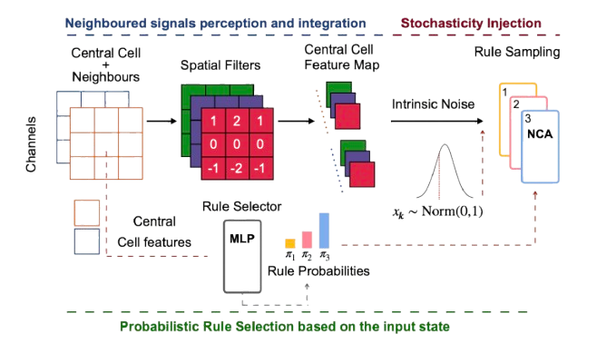
Before training MNCAs, we generate supervised trajectories using a biologically-inspired stochastic simulator.
Goal: produce trajectories with growth and spatial organization that serve as supervised targets for learning local update rules.
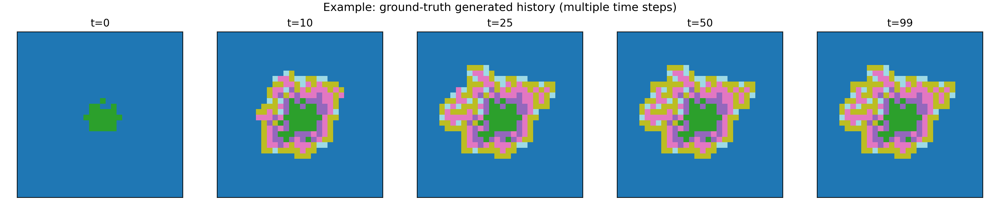
Key challenge: low short-term loss does not automatically guarantee long-term stability!
After training, we use the model to generate trajectories starting from an initial state and iterating the learned rule.
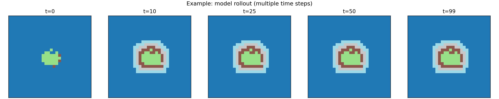
All panels start from the exact same t=0 state (sample 149 from the 300×100 dataset). Select model type and neighborhood size to compare against the ground truth trajectory.
histories_300_100.npy • sample 149 • steps: 0/10/25/50/99
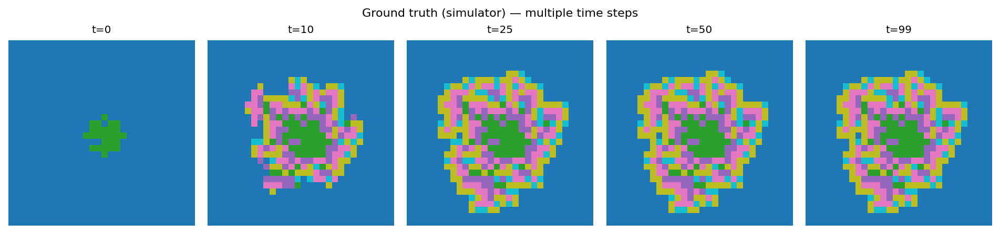
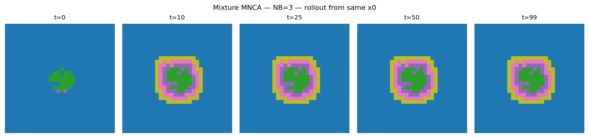
What impact does increasing neighborhood size have on the quality and stability of long-term simulations?
Result: Inconsistent rollouts, differences between NB too small to be conclusive.
Problem: Models still failing, confounding factors masking the NB effect.
The neighborhood size effect can be masked by confounding factors when models are already failing at long rollouts. A more controlled experimental protocol is needed.
We adopted a more controlled ablation to isolate the neighborhood size effect.
Constant temperature, consistent sampling mode, same number of parameters for all models
Testing at 25, 50 and 100 steps to see how differences emerge at increasing rollouts
KL divergence, Chi-square, MMD, Tumor Size, Border Size, Spatial Variance
Mean and standard deviation for all six metrics, across all neighborhood sizes (NB=1...7)
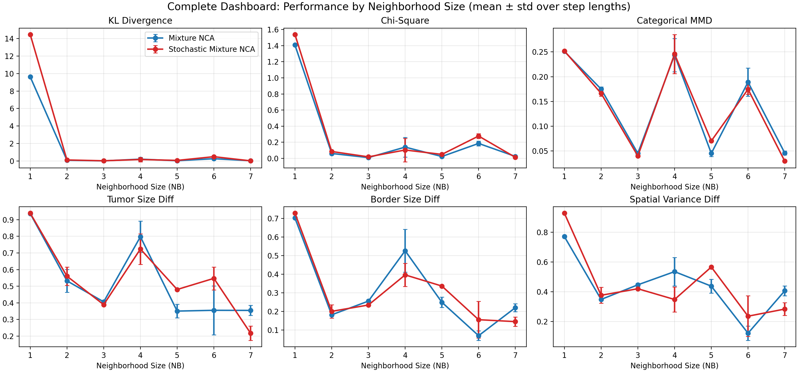
With NB=1, models only have access to the cell itself. This leads to severe mismatch in the global composition of cell types.
Improvement: ~200x going from NB=1 to NB>=2
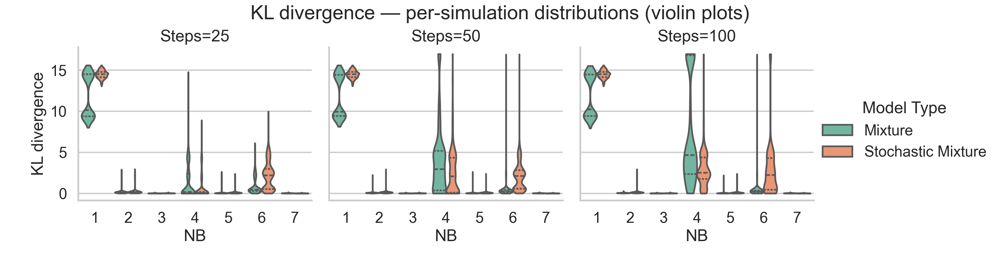
For NB>=2, performance does not improve monotonically with increasing neighborhood.
Different neighborhood sizes balance differently:
Differences become more evident as the evaluation horizon increases (25-50-100 steps).
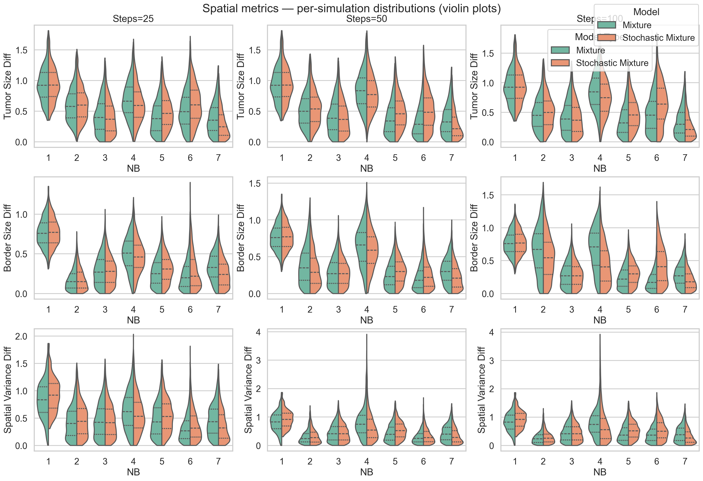
Ratio of metrics between NB=7 and NB=3. Values <1 indicate improvement, >1 indicate degradation.
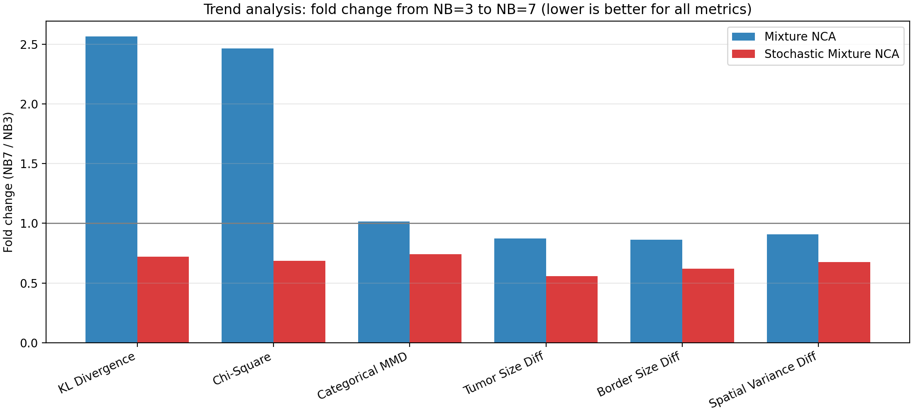
The bad-rate measures the fraction of simulations with "failure" outcome (beyond the 95th percentile of the best NB).
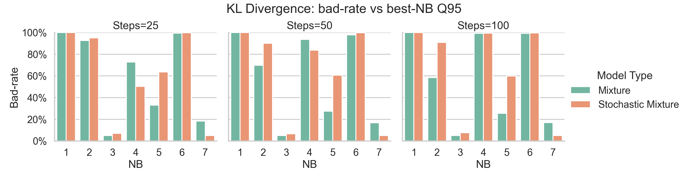
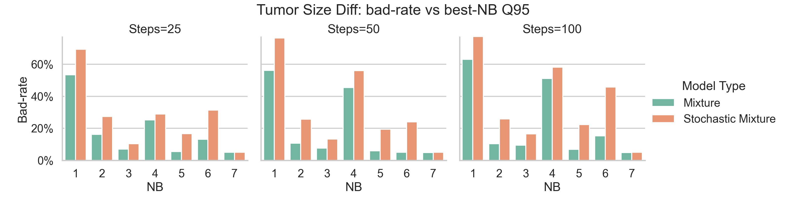
Computational cost remains approximately constant in the range NB in [1,7].
Time per step does not scale with O(NB^2) in practice! The implementation is dominated by constants and vectorization effects.
| Model | Time/Step |
|---|---|
| Mixture NCA | ~1.5 ms |
| Stochastic Mixture | ~3.2 ms |
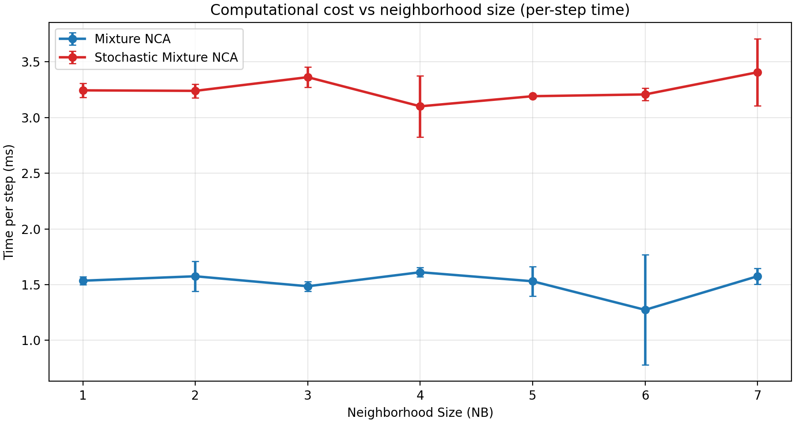
How do rule selection and usage change as neighborhood size varies?
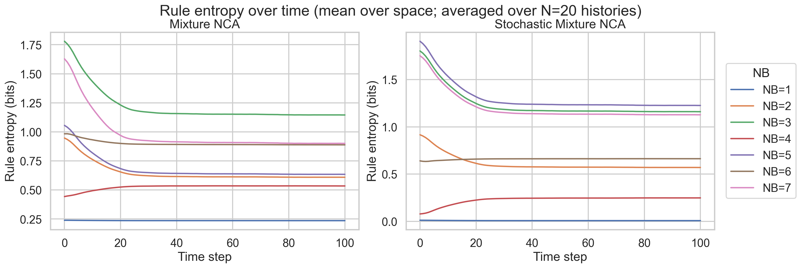
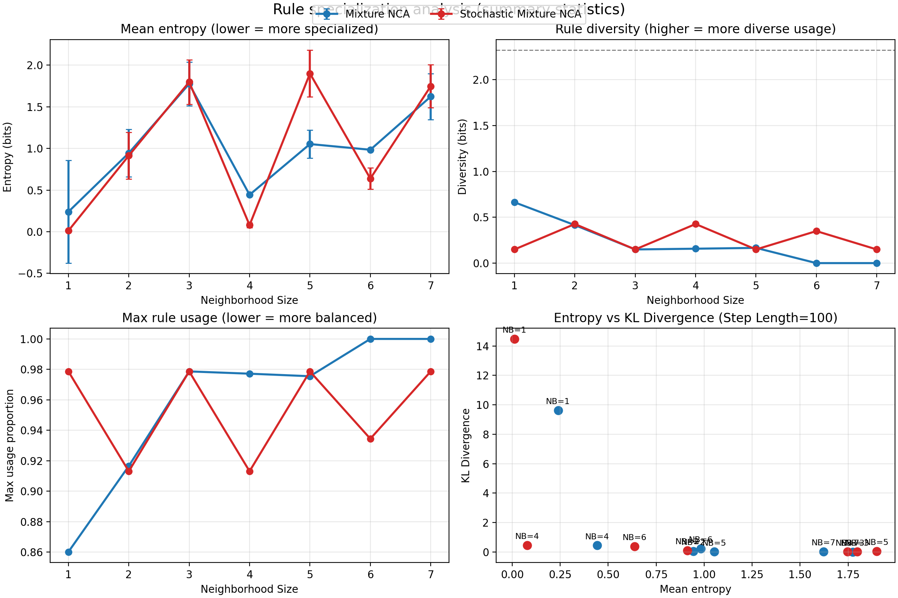
Visualization of the selection probability of each rule by spatial position.
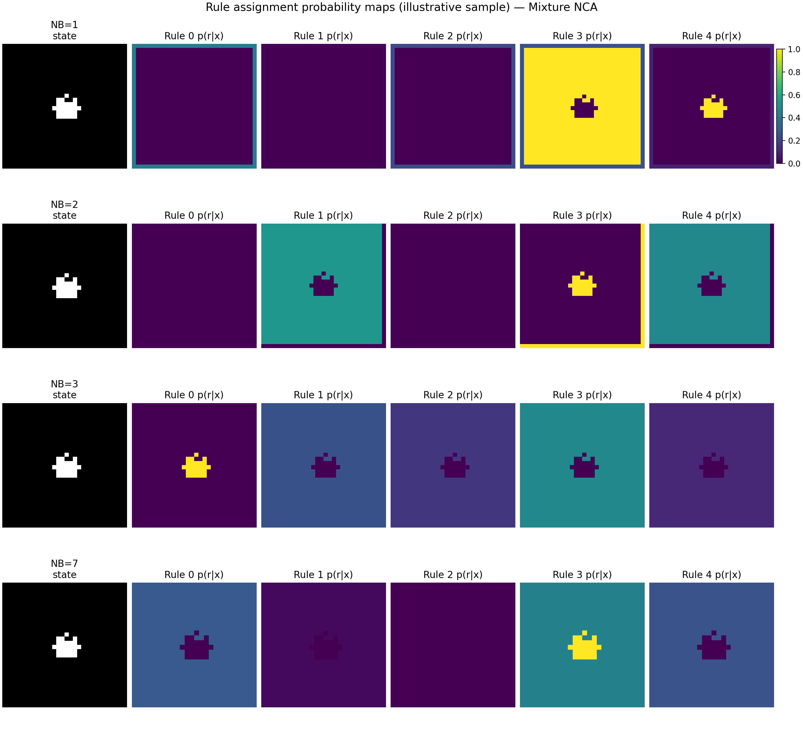
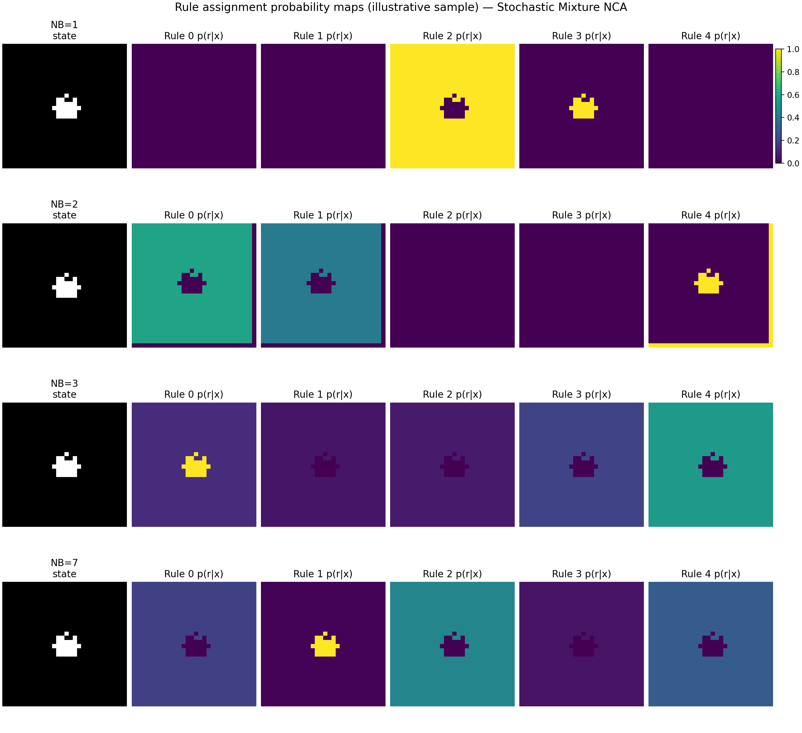
Same sample (149), same horizon (100 steps). This uses the checkpoints in tissue_simulation_nb_sweep_300x100/NB_k.
Same sample (149), stochastic rule selection, horizon 100 steps.
Non-parametric verification that observed differences are not explained by noise alone.
Global Kruskal-Wallis test + post-hoc Mann-Whitney U with Holm correction
| Model | Metric | Kruskal-Wallis p | Significant NB vs NB=1 |
|---|---|---|---|
| Mixture NCA | KL Divergence | <10^-4 | 2, 3, 4, 5, 6, 7 |
| Mixture NCA | Tumor Size Diff | <10^-4 | 2, 3, 4, 5, 6, 7 |
| Stochastic Mixture | KL Divergence | <10^-4 | 2, 3, 4, 5, 6, 7 |
| Stochastic Mixture | Categorical MMD | <10^-4 | 2, 3, 4, 5, 6 |
Going from NB=1 to NB>=2 produces a drastic improvement in stability and quality. The main "jump" happens at the first increment.
For NB>=2, performance does not improve monotonically. There is a trade-off between distributional agreement and spatial fidelity that depends on the metric and rollout horizon.
Differences between neighborhood sizes are easier to interpret when training and evaluation are consistent and when models are evaluated at multiple time horizons.
MNCAs can model tissue-like dynamics in a controlled synthetic setting, but careful experimental design is required to obtain interpretable conclusions.
NB>=2 is essential. Computational cost remains contained. The effect is statistically significant.
Choice of evaluation horizon, consistency between training and test, control of confounding factors.
Validation on real biological datasets, extension of curriculum learning with lessons learned.
Questions?